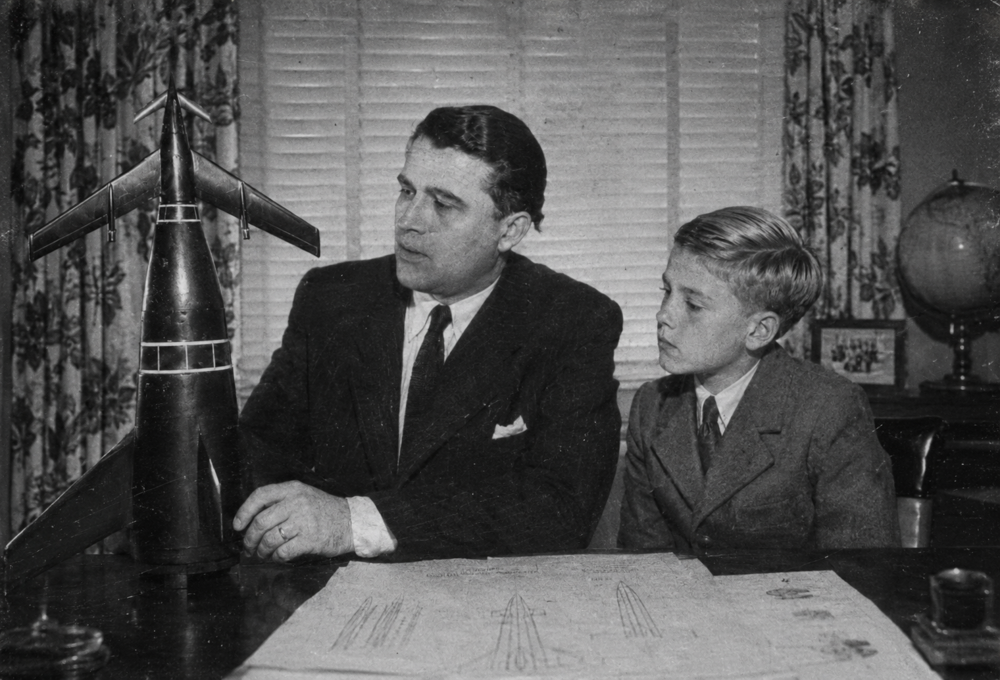

Spaceflight develops from a German satellite shock into a five-system contest over lunar access, reusable traffic, permanent stations, robotics, military inspection, shared safety law, and the first credible plans for Mars.
Contents
The German founding generation
Germany's early lead rests on a team rather than one inventor. Wernher von Braun is the systems architect and public figure. Eberhard Rees is the practical deputy and daily successor. Kurt Debus builds launch operations, Ernst Stuhlinger leads science and advanced propulsion, and Helmut Gröttrup connects guidance to computing. Arthur Rudolph and Konrad Dannenberg organize production and stages. Krafft Ehricke argues for permanent expansion. Hermann Oberth remains the elder theorist.
The same continuity that preserves their skills also preserves responsibility. Wartime rocketry served the Nazi state, and the V-2 production system used concentration-camp labor. Later official memory celebrates technical ascent while hiding coerced construction and the colonial economy underneath it.
1957–1961 · The opening shock
Germany launches Raumbote I, the first artificial satellite, in 1957. A polished documentary turns selected wartime and postwar engineering footage into the regime's “from projectile to spaceship” narrative. Britain experiences Silent Overflight and creates the Commonwealth Space and Signals Board and High Mast Tracking Network in 1958. Japan forms an Imperial Space Development Council the same year.
{kind=link}

In 1961 President Kennedy answers with a ten-year American lunar goal. Germany initially tries to meet it without abandoning Wernher von Braun's preferred system of heavy lift, orbital assembly, stations, fuel transfer, lunar ferries, and eventual Mars ships.
1961–1971 · Two paths to the Moon
Germany spends the 1960s developing docking, long-duration flight, construction, heavy lift, probes, and station modules. Political impatience forces a parallel one-use direct-ascent mission in 1967. On 20 December 1970 a two-person German expedition makes the first human landing on the Moon with a flag, camera, minimal scientific equipment, and little reserve.
America answers on 20 July 1971 with the Columbia two-aircraft system. Both the OV-2A Columbia and an OV-2B tanker take off horizontally from Canaveral; after low-orbit refueling, Columbia flies onward, lands vertically on the Moon, returns directly to Earth, reenters, and lands on the Canaveral runway. The first American lunar mission uses neither an orbital tug nor a separate lunar lander. Germany wins first arrival; America demonstrates the more reusable transport architecture.
1971–1983 · From visits to permanent presence
Germany commissions the 720-kilometer Orbitaler Raumhafen in 1975, combining docking, workshops, fuel, assembly, reactor power, and rotating partial-gravity habitation. America assembles Orbital Port Columbia in lower orbit for frequent spaceplane service, retrieval, repair, and modular growth; it becomes continuously occupied in 1979.

Kennedy Lunar Station becomes the first permanent human outpost beyond Earth in late 1979 or 1980. Germany's larger, standardized Mondhafen Süd follows in 1981. Japan's Kōbō laboratory develops from short Hikari visits into the continuously occupied multinational Hōrai platform in 1983. The 1985–86 expansion gives mature Hōrai rotating habitation, environmental systems, and an eight-person orbital command center.
The Raumhafen itself grows into an international orbital community. Italy commits a national research module in 1983. Japan's 1985 robotics laboratory and 1986 life-sciences laboratory follow. Their internal autonomy operates beneath German integrated command and a layered system of module jurisdiction; after refusing a permanent place throughout the 1980s, the United States establishes a more limited presence during the 1990s.
The five-system space age
Germany: heavy outward infrastructure
Peenemünde remains the intellectual center, Lower Volga handles dangerous and military launches, and Kribi supplies equatorial access through a coercively cleared African corridor. Germany excels at heavy lift, orbital assembly, large stations, lunar processing, and orbit-resident inspectors.
United States: reusable traffic
The OV-series fleet specializes a common runway-to-orbit concept into crew transport, tankers, cargo carriers, inspection and rescue vehicles, long-range patrol craft, and automatic military derivatives. By 1985 roughly forty operational orbital aircraft, plus ten to fifteen overhaul, trial, training, and reserve vehicles, support about forty-five to sixty sorties a year. Project Zenith adapts the architecture to rescue, inspection, electronic warfare, controlled deorbit, and conventional guided reentry strike; exact subtype masses, payloads, propulsion details, and fleet totals remain open.
Japan: standards, association, and robots
Ōsumi I reaches orbit in 1962. Operation Amaterasu in 1969 demonstrates Japanese command of orbital electronics before the Human Orbital Systems Program qualifies Hikari-1 with two people in 1973. Musubi docking follows in 1974. The associated-state program brings a Filipino specialist to Kōbō in 1978. Compact electronics, automated cargo, relay networks, and cooperative robotic explorers express the doctrine that machines prepare the road.
Commonwealth and Latin programs
The Commonwealth distributes work among British vehicle design and computing, Canadian avionics and life science, Australian launch and recovery, South African astronomy and southern tracking, Rhodesian materials and industrial support, New Zealand communications, and global telemetry. Endeavour flies in 1982 and docks with Columbia in 1983.
The Latin Space Community organizes a different answer to the Moon race: permanent multinational use of orbit. From the San Marco equatorial complex, Italian launchers carry Occitan avionics, Spanish structures, and systems tracked and recovered by Portugal. Aquila 0 flies uncrewed in 1973, Concordia-A follows uncrewed in 1975, and Aquila I finally carries a balanced three-national crew in 1984. Mercurius supplies the cargo and reboost architecture for construction of Stella Maris beginning in 1985.
Spaceflight milestone timeline
| Date | Milestone | Why it matters |
|---|---|---|
| 1957 | Germany launches Raumbote I | First satellite; public start of the systems race |
| 1958 | Commonwealth Space and Signals Board and High Mast established | Independent tracking precedes Commonwealth launch prestige |
| 1961 | Kennedy announces the American lunar goal | Moon landing becomes a political deadline |
| 1961–1969 | American reusable-aerospace research generation | X-15A, Dyna-Soar, X-24, and Project Apex converge on runway-to-orbit flight |
| 1962 | Japan launches Ōsumi I | Japan enters orbit under the revised chronology |
| 1964–1965 | Kuroshio I and Yamabiko I | Weather, ocean, and communications service displace prestige-only flight |
| 1965 | Commonwealth launches Prospero I | Independent British-Commonwealth launch capability |
| 1966–1967 | Black Prince satellite and recovery sequence | Launch, orbit, tracking, reentry, and naval recovery become one system |
| 1965 | Latin Space Convention | Four national programs become one interoperable Community |
| 1967–1969 | Latin satellite, weather, communications, and recovery sequence | San Marco gains independent practical capability |
| 1969 | OV-1A Pathfinder reaches orbit | Self-powered runway-to-orbit architecture is demonstrated |
| 1969–1972 | Operation Amaterasu, Kobe Notes, and San Marco Accords | A satellite seizure produces electronic restraint and the first shared orbital public service |
| 20 Dec. 1970 | German first lunar landing; Japan announces its machine-first program | Germany wins first arrival while Japan chooses robotic preparation |
| 20 July 1971 | Columbia lunar landing | Runway-launched tanker refueling supports a direct-return spaceplane mission |
| 1972–1976 | Liberty and Hercules enter service | Crew, automatic, and heavy-cargo roles become a fleet system |
| 1973–1974 | Hikari-1 and Musubi docking | Japan becomes a crewed space power |
| 1973 | Aquila 0 | Latin capsule, maneuver, docking, reentry, and recovery tests remain uncrewed |
| 1975 | Orbitaler Raumhafen commissioned | First great orbital harbor |
| 1975 | Concordia-A | Uncrewed Latin laboratory and systems-test core enters orbit |
| 1975–1983 | Japanese lunar orbiters, landers, rovers, and relay network | Distributed robotic exploration becomes an operating system |
| 1976 | Stockholm Orbital Safety and Salvage Convention | Shared registration, rescue, salvage, and debris rules |
| 1979 | Orbital Port Columbia continuously inhabited; Ranger enters service | Reusable traffic supports permanent orbit and extended patrol |
| 1979–1980 | Kennedy Lunar Station occupied | First permanent outpost beyond Earth |
| 1981 | Mondhafen Süd opens | Standardized German lunar industry begins |
| 1982 | Endeavour and the Geneva Orbital Incidents Agreement | Commonwealth human flight; close-approach rules |
| 1983 | Enterprise enters service; Hōrai becomes continuously occupied | American long-duration logistics and multinational Japanese-associated orbit mature |
| 1983–1986 | Italian and Japanese modules join the Raumhafen | A German station becomes an international community with layered national jurisdiction |
| 1984 | Resolution laboratory core | Commonwealth human flight becomes a crew-tended orbital institution |
| 1984 | Aquila I; OSV-1A; Japanese distributed Mars system | Crewed prestige, orbital military capability, and networked robotic exploration mature together |
| 1985 | Stella Maris construction begins | All five systems now treat space as infrastructure, not a completed race |
1981–1985 · Mars becomes the next systems test
Germany announces Marsplan 92, an integrated expedition ship to be assembled at the Raumhafen with its surface base carried in five descending elements. America answers with Project Pilgrim, whose transport and life-support work later survives the 1990 crash inside a commercial system. Japan launches a cooperative system of orbiters, relays, landers, rovers, and fixed stations in 1984; Britain and the Latin Space Community prepare independent deep-space institutions.
No human reaches Mars by 1985. The Moon functions as quarry, workshop, life-support laboratory, isolation test, and political foundation for the expeditions of the 1990s.
1985–2010 · The mature space age
Germany's Raumwerft commissions the integrated first expedition to reach Mars in 1993 and establish a base in the Tharsis–Olympus region. The Greenwich Compact sends an independent British expedition to western Valles Marineris in 1998. Frontier's corporate American system lands west of Olympus in 1999, while Japan follows with a compact direct mission in the early 2000s. The Latin Space Community avoids a fifth Mars landing and sends people to Ceres.
Orbital ports expand into settlement infrastructure. Mondhafen Süd supplies German orbital construction, the American system records the first human birth on the Moon, the Raumhafen gains the Promenadenring, Britain develops the Serenity complex, and Japan joins Kaguya Base to a north-polar corporate power station. In 1996–99 the five lunar systems build the Millennium Beacon System and geographically dispersed display zones. Their Millennium Lunar Illumination culminates in the rolling public ceremony remembered as the Millennium Dawn. See Mature space age, 1985–2010.
Safety law without demilitarization
The 1970 Kobe Notes first contain reversible military interference without settling its legality. The San Marco Meteorological Accords then establish a protected orbital category through voluntary disclosure: open weather, environmental, and rescue spacecraft receive recognizable identifiers and immunity from intentional interference while national command channels remain separate. German and American analysts also identify collision-cascade danger by the late 1960s.
The 1974 Geneva Space Weapons Convention restricts biological, chemical, and radiological-dispersal weapons for signatories but leaves ordinary kinetic systems legal. The 1976 Stockholm convention generalizes registration, rescue, passivation, debris notification, disposal, and protected recovery craft. After a dangerous 1981 inspection encounter, the 1982 Geneva Orbital Incidents Agreement adds transponders, safety zones, close-approach notification, direct station communications, rescue duties, and protection of life support. Together they form the core of orbital law: rules that make space safer without making it peaceful.
Permanent surface occupation later produces a looser extraterrestrial claims regime. The powers recognize registered works, occupation and continuing use, proportionate operating hazards, and maintained routes more readily than flags or paper partitions. Settlement districts, resource concessions, scientific preserves, navigation facilities, and abandoned works remain governed by overlapping custom rather than one comprehensive treaty.
The Catholic Church develops a parallel personal order rather than a territorial claim. Paul VI's space commission becomes the basis for an apostolic administration for extraterrestrial missions, rotating orbital chaplaincies, and the first permanent lunar parish.